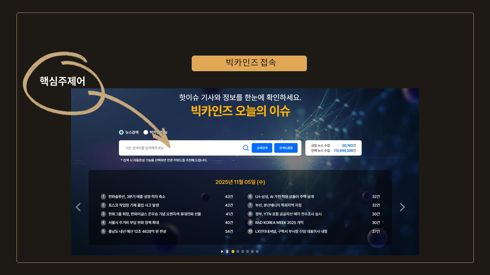
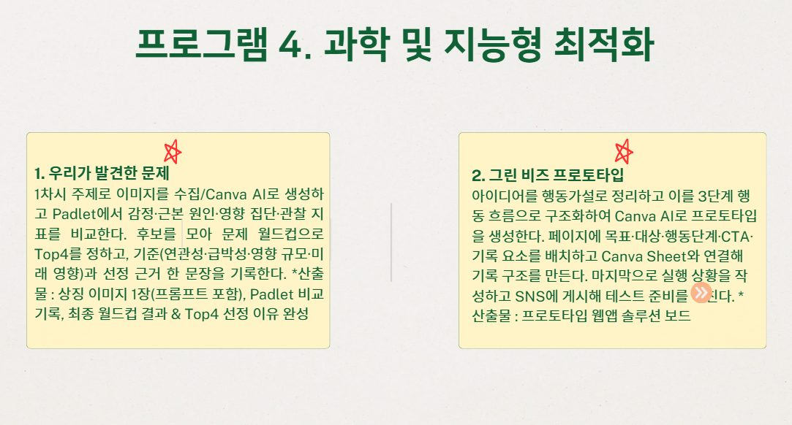
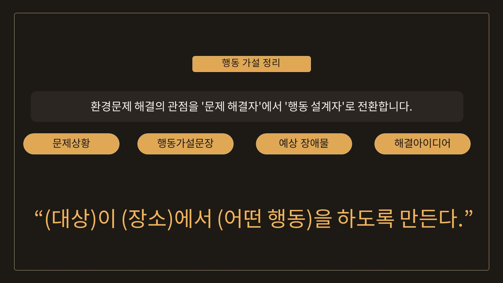
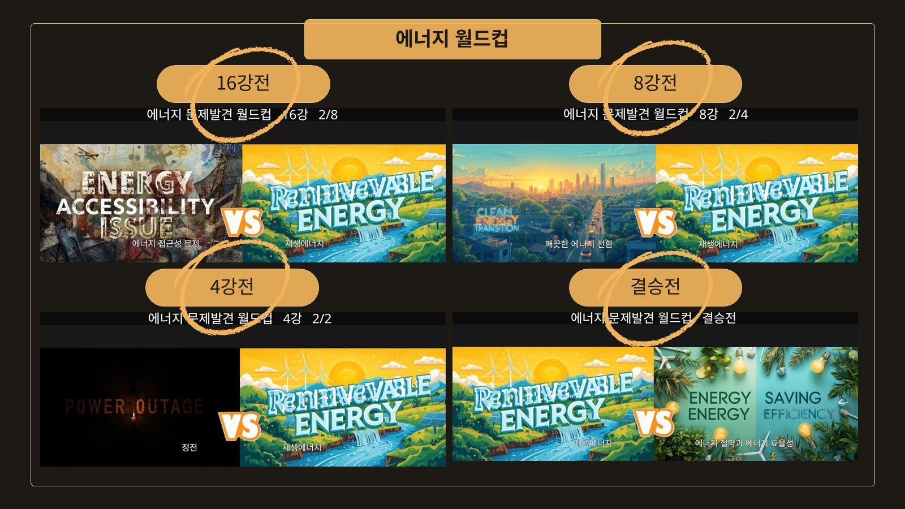
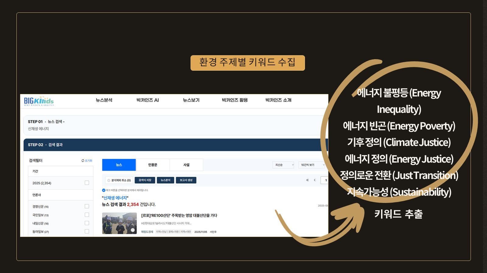
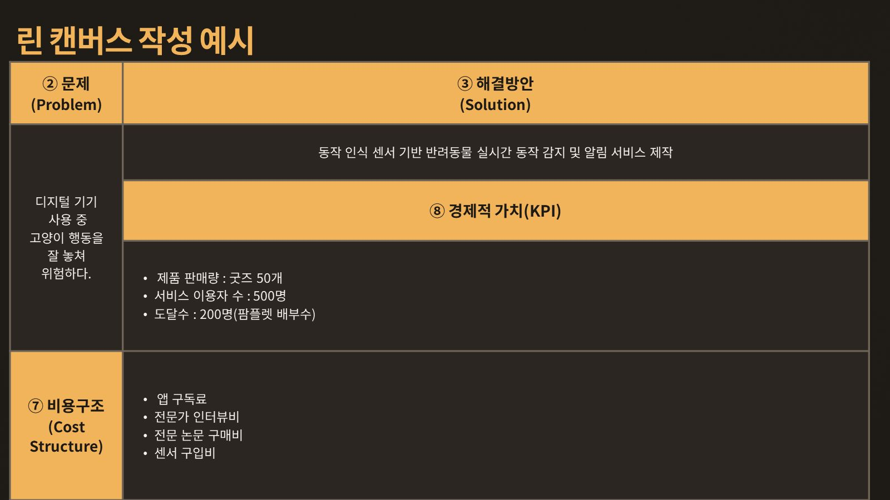

문제를 정의하고,
초기 프롬프트를 써요
오늘의 목표기후·환경 문제의 원인과 영향을 과학적 근거로 설명하고, 해결 대상과 필요한 데이터를 분석해 디지털 시제품의 핵심 기능과 초기 프롬프트를 설계해요.

수업 흐름 · 50분
← → 키나 아래 버튼으로 넘겨요. 교사 모드를 켜면 발문·유의점이 보여요.
올여름, 우리 주변에서
더위·에너지 때문에 생긴 문제는 무엇이었나요?

유의: 단순한 환경 문제 소개보다 과학적으로 해결할 수 있는 문제에 주목하도록.
오늘 우리가 할 일
기후·환경 문제의 원인과 영향을 과학적 근거로 설명하고, 해결 대상과 필요한 데이터를 분석해 디지털 시제품의 핵심 기능과 초기 프롬프트를 설계해요.

녹지가 줄어든 도시에서
냉방 에너지는 어떻게 될까요?
햇빛은 같아도, 나무의 그늘이 포장면에 닿는 햇빛을 가리고 잎의 증발산(물이 수증기로 바뀌며 열을 가져감)이 표면을 식혀요. 그림은 방향만 보여 줘요.
개념 정리: 도시 열섬 = 도시가 주변 교외보다 더 뜨거운 현상. 원인은 포장면·건물이 열을 모으고 천천히 내놓음, 녹지·물이 적음, 빽빽한 건물이 바람을 막음, 실외기·자동차 같은 인공열. 냉방이 늘면 실외기 배열이 다시 열섬을 키우는 되먹임 고리를 짚을 것.
시뮬레이터: 들어오는 햇빛(해)은 고정. 막대는 정성적 방향만 표현함(수치 근거 없음, 교육용 단순화). 학생이 "몇 도 내려가요?"라고 물으면 → 원자료에서 확인할 탐구 질문으로 돌려줄 것.
출처: US EPA 「Learn About Heat Islands」·「Using Trees and Vegetation to Reduce Heat Islands」, IPCC AR6 WG1 Box 10.3(도시 열섬).
누구를 위해, 무엇을 하는 프로그램일까?
- 해결 대상 — 이 문제로 불편을 겪는 사람은 누구일까요?
- 필요한 기능 — 그 사람에게 무엇을 보여 주면 도움이 될까요?
- 초기 프롬프트 — 입력·처리·출력을 AI에게 어떻게 설명할까요?
시범 프롬프트 v1 보기
도시 열섬 때문에 여름철 냉방 에너지 사용이 늘어나는 문제를 보여 주는 웹페이지를 만들어 줘. 사용자가 기온과 녹지율을 입력하면 전력 사용량이 어떻게 달라지는지 보여 줘. 결과는 그래프로 멋지게 보여 줘.
웹 제작용 견본이에요. 2차시에 테스트하고 고칠 출발점이에요 — '멋지게'는 무엇이 모호할까요?

우리 모둠이 풀 핵심 문제 하나를 골라요
문제의 원인과 영향을 탐색하고, 해결이 필요한 대상과 사용자의 어려움을 구체화해요.

데이터와 변수 확인하기
우리 문제와 관련된 자료가 원자료 사이트에 있는지 직접 찾아봐요.
기온 · 기상자료개방포털 지역 전력 · 한전 전력데이터 개방포털 전력 수요 · 전력거래소 EPSIS 녹지 · 토지피복지도 공공데이터포털 Google Sheets
먼저 끝난 모둠: 같은 변수를 다른 지역(교외 관측소)과 비교해 '주변보다 얼마나 더운가'를 확인하게 함.
사용자가 무엇을 넣으면,
프로그램은 무엇을 보여 줄까요?

초기 프롬프트 점검하기
- 해결하려는 문제와 사용자가 들어 있나요?
- 입력 · 처리 · 출력이 모두 적혀 있나요?
- 빠진 기능이나 모호한 요청("좋게", "알아서")은 없나요?
- 실현 가능한 기능인가요?

초기 프롬프트는
지우지 말고 보관해요
모둠별 문제 정의와 초기 프롬프트를 공동 보고서에 기록하고, 다음 차시에 구현할 핵심 기능을 확정해요.

1차시 관찰평가: 문제 정의 / 데이터와 변수 탐색 / 해결 대상과 가치 발견 / 초기 프롬프트 설계.
활동지
문제를 정의하고 설계해요
적은 내용은 이 기기의 브라우저에만 저장돼요. 다 쓰면 맨 아래 「내 기록 모두 복사」로 공동 보고서에 붙여 넣어요.
1우리 모둠이 해결할 문제 정의하기
문제의 원인과 영향을 조사하고, 과학적으로 확인할 수 있는 데이터와 변수를 찾아요.
어떤 기준으로 골랐나요? (PPT 4장의 선정 기준)
2해결 방안과 초기 프롬프트 설계하기
생성형 AI로 만들 웹사이트·앱·시뮬레이터를 정하고, 누가 어떤 도움을 받는지 적어요.
함께 넣을 조건 (골라요)
3입력 → 처리 → 출력 설계 보드
입력활용할 정보
사용자가 입력하거나 프로그램이 활용할 정보
처리판단
계산·비교·예측하거나 조건에 따라 판단하는 방법
출력기능
사용자에게 보여 줄 정보나 기능
이 차시 슬라이드 · PPT 4~31장
나가기 질문
다음 차시에 바이브 코딩으로 구현할 핵심 기능 하나는 무엇인가요? 그 기능은 어떤 값을 넣으면 무엇을 보여 주나요?